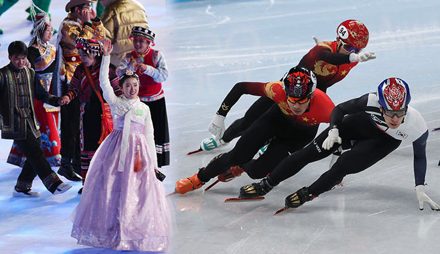

- Sports
- Politics
- Etc
한복 공정, 편파 판정,도핑에 <섬뜩한 코치>까지 ...
탈 많았던 2022 베이징 올림픽

대한민국의 문체부 장관이 한복을 차려입고 참석한 개막식이었습니다.
중국 내 소수 민족 중 조선족의 복식으로 한복이 등장한 건데, '한복 공정'이라는 비판이 쏟아졌습니다.
쇼트트랙 남자 1000m 준결승에서 나온 황대헌과 이준서의 황당한 실격. 결승 1위 헝가리 선수까지 실격 처리되자
편파 판정 목소리는 극에 달했습니다.
중국 런쯔웨이는 한 번도 1위를 하지 않고도 금메달을 목에 걸었습니다.
"많이 아쉽고 억울했지만 그 뒷일은 어른들이 하실 것이기 때문에 그거에 대해서는 이 정도까지만 말씀드리는 게 맞는 것 같아요."
황대헌/쇼트트랙 국가대표
지난해 12월 러시아 자국 경기의 도핑 샘플에서 금지 약물 성분이 검출됐고,
이 사실이 이번 대회 도중 알려진 건데,
러시아는 이 사건을 스포츠중재재판소로 넘긴 뒤 방어권 측면에서 유리한 판단을 받아
남은 경기 출전을 강행하는 촌극을 벌였습니다.